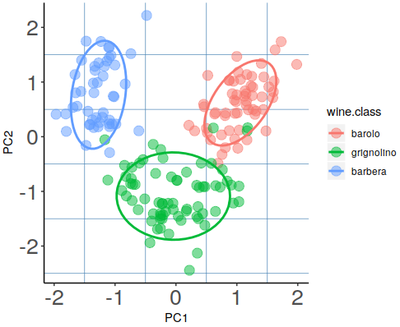

Principal Component Analysis
(PCA) in R
Karobben
24 Jan 2020
1 prcomp
 R
R

# install ggbioplot
# install_github("vqv/ggbiplot")
# install.packages('plyr')
data(wine)
wine.pca <- prcomp(wine, scale. = TRUE)
# bioplot
ggbiplot(wine.pca, obs.scale = 1, var.scale = 1,
groups = wine.class, ellipse = TRUE, circle = TRUE) +
scale_color_discrete(name = '') +
theme_light()
2 Psych
R
library(psych)
library(ggplot2)
PC <- principal(wine, nfactors=2, rotate ="none")
pc <- data.frame(PC$scores)
p <- ggplot(pc, aes(x=PC1, y=PC2,color=wine.class )) +
geom_point(size=4,alpha=0.5)+
theme(axis.text= element_text(size=20))+
theme(panel.grid.major =element_blank(),
panel.grid.minor = element_line(color="steelblue"),
panel.background = element_blank(),
axis.line = element_line(colour = "black"))+
stat_ellipse(lwd=1,level = 0.8)

3 qplot
R
library(ggplot2)
qplot(x=PC1,y=PC2, data=pc,colour=factor(wine.class))+
theme(legend.position="none")+
stat_ellipse(lwd=1,level = 0.8)
Arguments for ggbioplot
Terminal
ggbiplot(pcobj, choices = 1:2, scale = 1, pc.biplot =
TRUE, obs.scale = 1 - scale, var.scale = scale, groups =
NULL, ellipse = FALSE, ellipse.prob = 0.68, labels =
NULL, labels.size = 3, alpha = 1, var.axes = TRUE, circle
= FALSE, circle.prob = 0.69, varname.size = 3,
varname.adjust = 1.5, varname.abbrev = FALSE, ...)
pcobj # prcomp()或princomp()返回结果
choices # 选择轴，默认1：2
scale # covariance biplot (scale = 1), form biplot (scale = 0).
# When scale = 1, the inner product between the variables
# approximates the covariance and the distance between the points approximates the Mahalanobis distance.
obs.scale # 标准化观测值
var.scale # 标准化变异
pc.biplot # 兼容 biplot.princomp()
groups # 组信息，并按组上色
ellipse # 添加组椭圆
ellipse.prob # 置信区间
labels #向量名称
labels.size #名称大小
alpha #点透明度 (0 = TRUEransparent, 1 = opaque)
circle #绘制相关环(only applies when prcomp was called with scale = TRUE and when var.scale = 1)
var.axes #绘制变量线-菌相关
varname.size #变量名大小
varname.adjust #标签与箭头距离 >= 1 means farther from the arrow
varname.abbrev # 标签是否缩写